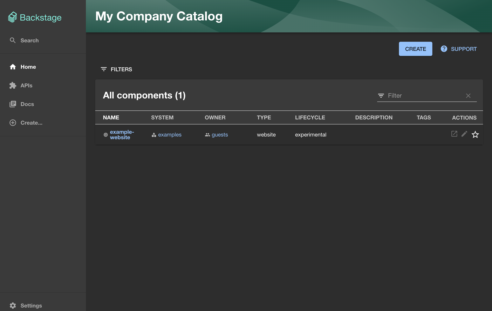

Setup Backstage Dev Environment
Getting Started
We are going to start by checking the repository out locally.
Afterwards, you can simply open the checked out folder in Visual Studio Code.
If the Dev Container extension is properly installed, the left bottom of the IDE will show "Dev Container:"
If it does not, please make sure that the Dev Containers VSCode extension is installed
and then hit ctrl/cmd+shift+p and search for "Dev Containers: Reopen in Container".
Creating a new Backstage app
Once you have a running environment you will now need to create a new backstage
app and get it started. To do this we have to use an npx command that will use
the backstage scaffolder to create a new backstage app.
Open the vscode terminal and run the following command and answer the questions when prompted, accept all defaults.
In this command we specify the path to create the app in, which is normally optional but needed within our setup as the backstage folder will already exists due to container mounts.
This command will take a few minutes to run as it scaffolds the ann and restores all the packages using yarn.
Once it is complete, we can start the development environment by running the following command:

Once you have a running installation we can move to the first exercise (make sure you read the note on Authentication below first!). In case you don't see the Backstage app running, please check the following:
Working Directory
Ensure you are in the backstage directory when running the above command.
All of the commands in this workshop should be run from the backstage directory.
Port mapping
Backstage is running two processes exposed in the the container on port 3000 and 7007. The codespace is mapping the ports to your local ports. Ensure you have no other processes running on those ports and both ports are mapped, you may have to manually add port 7007 in the vscode UI.
Known IPv6 issue
Backstage has a known issue with IPv6 that causes the backstage website to not load, see here.
To work around this, please go to backstage/app-config.yaml and update the app block by explicitly setting the host:
Authentication
For this workshop we will need to authenticate with GitHub in order to create new repositories in organizations that you own. To do this we need a token for GitHub. We can re-use the token from the GitHub CLI for these purposes, this is the easiest way to get a token and the token is short lived.
Before we can continue we need to stop the running backstage app, you can do
this by pressing ctrl+c in the terminal where the app is running. Next we use
the same terminal session to authenticate with GitHub.
The GitHub CLI is already installed in this codespace, first you need to login.
Follow the prompts in the terminal and you should see
✓ Logged in as <USERNAME> when successful.
We need to export the token to the command line to enable it to be used in the backstage app.
Terminal Sessions
This token will only be available in the current terminal session, if you close the terminal (or open a new one) you will need to re-run the above export command to export the token.